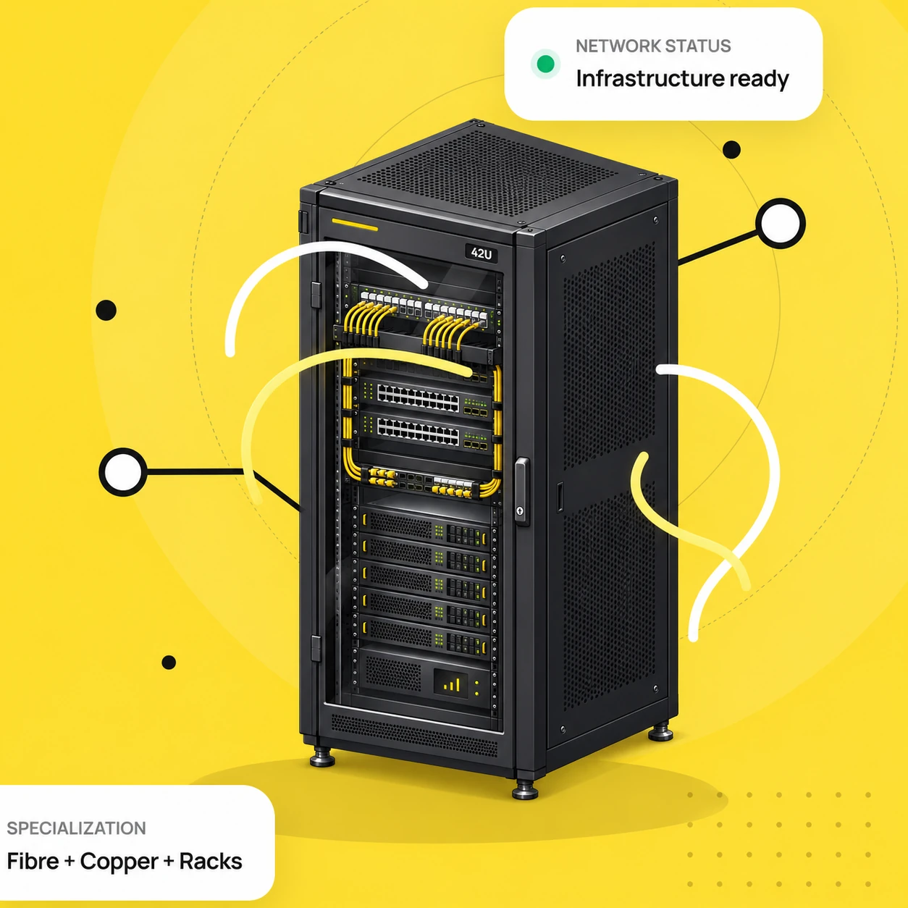

Fibre-optic infrastructure
Optical backbone, fibre routing, patching, optical distribution and physical-link troubleshooting.
From fibre-optic infrastructure and structured cabling to server rooms and mission-critical systems. Real engineering work, clear documentation and dependable handover.

Working at the physical layer — building connectivity between systems, sites, devices and the people who depend on them.
Optical backbone, fibre routing, patching, optical distribution and physical-link troubleshooting.

Cat5e / Cat6, patch panels, RJ45 termination, cable testing and floor-by-floor distribution.

Ethernet, switching, PoE, Wi‑Fi, TCP/IP diagnostics and equipment connectivity.

Racks and cabinets, physical equipment layouts, patching and technical infrastructure handover.
Physical access control, IP video surveillance, building-connected devices and monitoring.

UPS-related infrastructure, backup concepts, technical documentation and operational support.

Reading construction drawings, network schematics, structured-cabling layouts and rack diagrams to support accurate installation and site coordination.

Led technical teams of up to 45 people. Coordinated work with customers and contractors, maintained project records, and supported site reporting and handover documentation.

Created technical instructions, work procedures and operating guidelines. Provided end-user technical support, troubleshooting connectivity, hardware and software-related issues.
15 infrastructure case studies across microelectronics, telecom operators, corporate systems and commercial facilities. Selected site photographs and representative equipment imagery appear in project galleries.
Network infrastructure modernization for a microelectronics R&D environment. Replacement and construction of structured cabling across an 18-storey building, with an optical backbone and a network rack on every floor. Separate IT and security server rooms and a restricted-access technical space.
Physical network and connectivity work supporting a 90 nm semiconductor production environment. Structured cabling across buildings 1–4, fibre connectivity to every floor, and industrial-network integration in a high-availability setting.
Separate 180 nm manufacturing infrastructure scope within the Mikron site. Structured copper and fibre cabling across production buildings 1–4, inter-floor links and support for industrial networking and building technical systems.
Dedicated laboratory infrastructure work associated with the 45 nm research area, including technical connectivity and uninterruptible power supply (UPS) infrastructure. This describes the laboratory support scope, not a claim of commercial 45 nm production.
Structured cabling and fibre-optic infrastructure for a laboratory building at the Moscow Radio Engineering Plant (MRTZ), with UPS-related power continuity systems and technical network infrastructure.
Fibre-optic telecommunications infrastructure work across Moscow and Moscow Oblast for Nauka-Svyaz, an operator with its own metropolitan and regional optical network.
City-wide optical network work in Moscow for the Moscow Centre for New Telecommunications Technologies (MC NTT). The stated project scope covered approximately 600 fibre-optic cables.
Work on approximately 200 multi-pair telecommunications cables in the Moscow fixed-line network, including copper distribution, cable connectivity and infrastructure modernization.
Fibre-optic network and connectivity work related to MTS mobile base-station sites. Optical access infrastructure, physical connections and network installation support.
Optical infrastructure and connectivity work for Beeline base-station facilities, including fibre connections, physical network equipment and technical installation support.
Office structured cabling and a video conferencing system for approximately 50 employees. Connectivity for conference rooms, network endpoints, audiovisual communication and supporting low-voltage systems.
Structured cabling works within the Columbus shopping and entertainment centre in Moscow. Network cable routing, connection points and support for retail-building connectivity systems.
Structured cabling work at Vremena Goda, a premium shopping gallery complex on Kutuzovsky Prospekt in Moscow. Physical network and low-voltage connectivity for a multi-tenant retail environment.
Communication networks and server-room infrastructure for a technology hub: racks and equipment spaces, virtualization and backup architecture, security infrastructure, testing, technical documentation and operational handover.
On-site network and low-voltage communications infrastructure deployment for a hotel environment. Equipment installation, connectivity testing, commissioning support and technical coordination.
Public descriptions focus on technical scope. Restricted facilities, security layouts and proprietary system details are intentionally omitted.
Infrastructure work is successful when the physical network is clearly installed, tested, documented and ready to operate.
Understand topology, site constraints, connectivity requirements and available infrastructure.
Route fibre and copper, organize racks and patching, connect hardware and endpoints.
Check physical links, isolate faults, validate network connectivity and track outstanding issues.
Provide documentation, clear issue records and coordinated transfer to technical operations.
I have worked across telecommunications, industrial facilities, server-room infrastructure, network-connected systems and technology integration projects.
My background combines hands-on network installations and systems integration with reading technical drawings, leading teams of up to 45 people and coordinating directly with customers. I prepare project documentation, technical instructions and operating procedures, and have experience providing end-user technical support. Today I am based in Toronto, Ontario.
Request my CV by email ↗For network infrastructure opportunities, project inquiries or a copy of my CV, please contact me by email. I respond directly and share documents upon request.